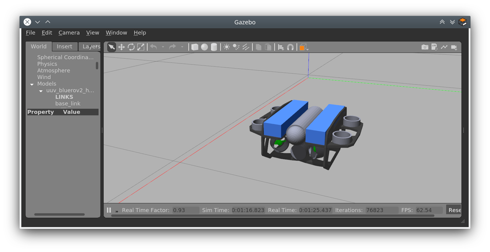

Install Firmware¶
Section author: Lennart Alff <thies.lennart.alff@tuhh.de>
Note
The BlueROV used in this class runs the PX4 firmware. For the class we have created a fork of the firmware, please follow the instructions to install it. Most likely you will not get in touch with any of the Firmware source code, but still you need to clone and install the corresponding repositories to complete this setup guide.
Set Up The Workspace¶
By now your directory structure should look like this if you followed the previous ROS installation section:
~/fav
└── catkin_ws
├── build
├── devel
├── logs
└── src
Clone the Firmware
cd ~/fav && git clone --recursive https://github.com/HippoCampusRobotics/fav_PX4-Autopilot.git
Clone MAVLink
git clone https://github.com/HippoCampusRobotics/fav_mavlink.git ~/fav/catkin_ws/src/mavlink
Clone mavros
git clone https://github.com/HippoCampusRobotics/fav_mavros.git ~/fav/catkin_ws/src/mavros
Use
rosdepto resolve dependenciescd ~/fav/catkin_ws && rosdep install --from-paths src --ignore-src -r -y
Install GeographicLib dataset
sudo ./src/mavros/mavros/scripts/install_geographiclib_datasets.sh
Install
xmlstarletandpython-pipsudo apt install xmlstarlet python-pip
Now your directory structure should look similiar to:
~/fav
├── catkin_ws
│ ├── build
│ ├── devel
│ ├── logs
│ └── src
│ ├── mavlink
│ └── mavros
└── fav_PX4-Autopilot
Build The Catkin Workspace¶
Switch into your
catkin_wscd ~/fav/catkin_wsBuild the code
catkin build
Build The PX4 Firmware¶
Switch into your
fav_PX4-Autopilotdirectorycd ~/fav/fav_PX4-AutopilotSet up dependencies
bash ./Tools/setup/ubuntu.sh --no-nuttx
Build the code
DONT_RUN=1 make -j1 px4_sitl gazebo_uuv_bluerov2_heavy
Note
In some cases the
makecommand might fail with an internal compiler error. This happens if the build process needs more RAM than is available. Just repeat the build command a few times.
Configure Environment Variables¶
Switch into your
favdirectorycd ~/favEdit your
~/.bashrcby executing the following commandsecho "source $(pwd)/catkin_ws/devel/setup.bash" >> ~/.bashrc echo "source $(pwd)/fav_PX4-Autopilot/Tools/setup_gazebo.bash $(pwd)/fav_PX4-Autopilot $(pwd)/fav_PX4-Autopilot/build/px4_sitl_default > /dev/null" >> ~/.bashrc echo "export ROS_PACKAGE_PATH=\$ROS_PACKAGE_PATH:$(pwd)/fav_PX4-Autopilot" >> ~/.bashrc echo "export ROS_PACKAGE_PATH=\$ROS_PACKAGE_PATH:$(pwd)/fav_PX4-Autopilot/Tools/sitl_gazebo" >> ~/.bashrc
Apply the changes of
~/.bashrcsource ~/.bashrc
Test Your Setup¶
Attention
Make sure all packages are upgraded by running
sudo apt update && sudo apt upgrade
At this point you can check that your setup is functional by launching the simulation:
roslaunch px4 mavros_posix_sitl.launch vehicle:=uuv_bluerov2_heavy world:=$HOME/fav/fav_PX4-Autopilot/Tools/sitl_gazebo/worlds/uuv_hippocampus.world
After a few seconds something similiar to the following screenshot should appear:
You can quit the program by hitting Ctrl + C in the terminal you have started it. It will take a few seconds to stop all the running processes.
Note
Closing the Gazebo GUI will only close the Gazebo GUI. All the other started processes will continue running. So please use the above mentioned shortcut to kill them.